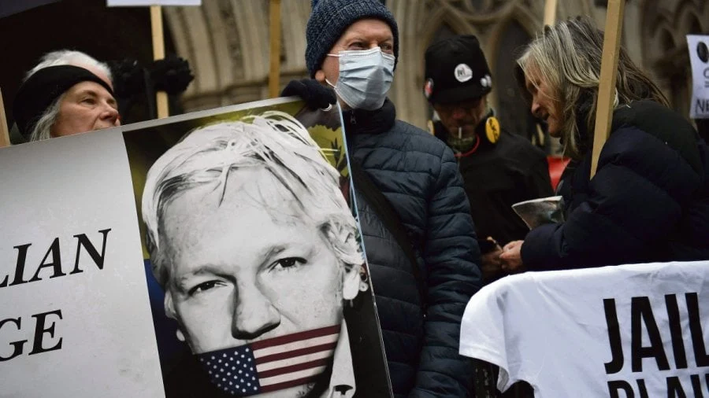

Partage
Le 4 février 2022, l’Assemblée rejette la résolution sur l’asile de Julian Assange
Date indiquée par Facebook · 8 février 2022
Repères éditoriaux
L’Assemblée nationale a rejeté la proposition de résolution qui invitait le gouvernement à accorder l’asile à Julian Assange et à faciliter l’accès au statut de réfugié pour les lanceurs d’alerte étrangers. Nous relayons ici la réaction publiée après le vote.
Texte conservé avec la publication
France. Le « non » déshonorant de l’Assemblée nationale à Julian Assange
Les députés français étaient invités à se prononcer sur un texte non contraignant visant à ouvrir les portes du pays au journaliste lanceur d’alerte. Une majorité a opposé une fin de non-recevoir.
L’Assemblée nationale française aurait pu se grandir vendredi. Les députés de la nation auraient en effet pu mettre leurs pas dans ceux de leurs lointains prédécesseurs qui, révolutionnaires, avaient voté la Déclaration des droits de l’homme et du citoyen. En fin de semaine dernière, il s’agissait d’examiner une proposition de résolution transpartisane invitant le gouvernement français à octroyer le statut de réfugié à Julian Assange, fondateur de WikiLeaks, mais également à faciliter l’accès au statut de réfugié pour les lanceurs d’alerte étrangers.
« La majorité ne serait pas crédible si elle refusait notre proposition. Elle a porté la loi sur la protection des lanceurs d'alerte, défendue par le député et vice-président de l'Asssemblée
Sylvain Waserman », expliquait à l’Humanité la députée Jennifer de Temmerman (Libertés et Territoires), qui portait le texte soutenu par une soixantaine de parlementaires, tous groupes confondus. Elle l'a approuvée mardi matin en commission mixte paritaire (entre députés et sénateurs). Et Sylvain Waserman l'a même défendue au niveau de l’assemblée parlementaire du Conseil de l'Europe. On ne peut pas donner des leçons à nos collègues européens un jour et dire “ça ne marche pas pour Julien Assange” le jour d'après. Et pourtant...
L’initiative introduisant 1a question au sein même de l'Assemblée nationale était d'autant plus importante que la Haute Cour de justice de Londres a finalement autorisé le journaliste australien
à contester, devant la Cour suprême, son extradition vers 1es États-Unis. Ouvrir l'opportunité de son accueil sur le sol français était tout à la fois symbolique et politique. Quelques heures avant le
vote, le député communiste des Bouches-du-Rhône (groupe Gauche démocrate et républicaine) Pierre Dharréville insistait : « Les poursuites engagées contre Julien Assange sont de nature politique. La France doit proposer de lui accorder l’asile politique. Nous avons à plusieurs reprises interpellé le gouvernement en ce sens. »
La résolution présentée n'avait qu'une portée symbolique, car non contraignante. Elle avait reçu néanmoins le soutien de candidats à la présidentielle, Fabien Roussel (PCF) et Jean-Luc Mélenchon (FI), de députés écologistes, de centristes de l'UDI, d'une socialiste et d'une poignée d'élus de la majorité. Cela n'aura pas suffi. Les députés ont rejeté la résolution par 17 voix pour et 31 contre.
La majorité macroniste a ainsi démontré qu'elle accordait peu de crédit aux lanceurs d'alerte et à Julien Assange, qui pourtant « a dénoncé des agissements barbares et des bavures inqualifiables qu'il fallait rendre publics » , comme l'a souligné le député communiste Stéphane Peu. François Ruffin (FI) a déploré la lâcheté française, tandis que le député écologiste (ex-LaRem) Cédric Villani a clamé « La France ne se fera respecter que si elle parle haut ».
Pierre Barbancey dans l'Humanité

Sources
Archive rouge · export Facebook · AR-0002-FB-01967
À lire aussi · Liberté pour Julian Assange. Informer n’est pas un crime.